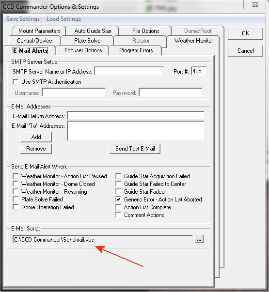

|
CCD Commander - E-Mail Script |
||
|
|
Versión 1.0 |
|
Una de las facilidades que presenta CCD Commander es la posibilidad de enviar un e-mail si se produce algún tipo de alerta.
Esto ha funcionado bien hasta que los proveedores de correo electrónico se han puesto las pilas por razones de seguridad y han obligado a que la conexión se realice cifrada mediante SSL. Para colmo, el autor del programa parece no tener mucha prisa en resolver este problema:
[2013/DIC/29] If the mail provider does not support plain text SMTP, then it will not work. CCD Commander does not support SSL encrypted email. -Matt Thomas
La única solución que ha dado como alternativa es facilitar ejecutar un script cada vez que el CCD Commander tenga que enviar un mail, pasándole a dicho script como argumentos el asunto del mail y el cuerpo del mensaje.
Así que investigando un ratito, y basándome en algunos ejemplos que he visto, he elaborado el siguiente script: Sendmail.vbs. Lo he dejado preparado para GoogleMail, por lo que sólo tienes que modificarlo para poner tus datos de identificación y tu dirección de correo electrónico.
Respecto al CCD Commander, en Setup, en la lengueta de E-Mail Alerts, hay que dejar todos los campos en blanco (importante!!), menos el del puerto que vale cualquier número e incluir el script en el campo E-Mail Script, como se puede apreciar en la captura adjunta.

De esta manera se enviarán las alertas que se programen a vuestro correo electrónico, aunque éste obligue a utilizar conexiones cifradas.
Espero que os sea de ayuda!!